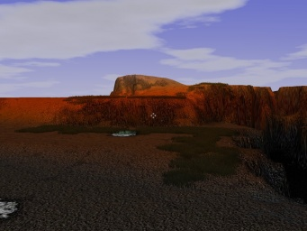
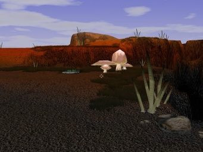
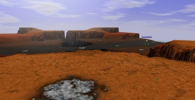
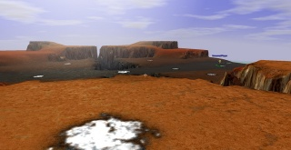
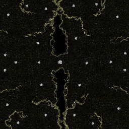

Mapdev:Tutorial Intermediate
Beginners Tutorial Stage 2
We continue on from stage 1 of the beginners tutorial to add finer detail for the landscape, specular highlights, features like trees, rocks etc. And change the lighting conditions.
What you will need
- An image editor, such as GIMP or Adobe Photoshop, etc
- 7zip
- The files we used in the first stage
- Spring Features - archive
There are a multitude of other tools you can use to make maps, however for the purposes of this beginners tutorial, these are the only ones you will need. Check the tools section for more information.
Download
Map Features
Map features are the extra bits and bobs added to a map that give it extra bling eg. bushes, trees, houses, rocks etc. You can bundle them with your map, or you can create a dependency to external archives like Spring Features. For this tutorial we will be depending on spring features.
| Tip | |
|---|---|
| There is not a simple, solid, mature way to cover your map with features yet. Provided here are instructions for the simplest method, but its very time consuming and tedious. There are better methods that yield good results, you can find them listed in the features page. |
 |
 |
| Without Features | With Features |
|---|
{kind=link}
{kind=link}
- move the downloaded Spring Features archive to your spring games folder
- Edit your mapinfo.lua file to include spring features as a dependency
depend = {"Map Helper v1","Spring Features 1.0"}, - Edit the ./mymap.sdd/mapconfig/featureplacer/set.lua file
- Under the
objectlistsubtable, add lines like the one below to place a feature{ name = 'name', x = 0 , z = 0 , rot = "0"},- The names of the features are specified in the feature folder within the map spring features archive
- Coordinate system is the same as when placing the start positions:
rotis the rotation around theyaxis.
eg.
objectlist = { { name = 'name', x = 0 , z = 0 , rot = "0"}, { name = 'name', x = 0 , z = 0 , rot = "0"}, { name = 'name', x = 0 , z = 0 , rot = "0"}, { name = 'name', x = 0 , z = 0 , rot = "0"}, },

|
Specular Map
The specular map defines how shiny and the colour of the shine that the terrain is, it is useful for ice & snow, polished rock, metal, or wet ground types. The Specular map can be any size, and is stretched over the terrain.
 |
 |
| Without Specular Map | With Specular Map |
|---|
{kind=link}
{kind=link}
- Create a 1024x1024 RGB image
- Paint it such that only the areas you wish to be shiny have colour,
- Save the image to your working directory as spec_color.png
Example 
Example Specular Color Map - Create another 1024x1024 greyscale image
- Paint it such that black is matt finish ie. light will be reflected no matter the viewing angle, and white is reflective finish ie light gets reflected at increasingly sharper viewing angle. you will probably want to keep it mostly grey to white.

Caution Be careful not to have any fully black pixels, as it will cause artifacts when the specular highlights are multiplied. - Save the image to your working directory as spec_exp.png
Example Example Specular Exponent Map - Combine the two images into one 1024x1024 RGBA image
- Save the result as "working directory"/mymapname.sdd/maps/specular.png
{kind=link}
{kind=link}
Detail
Detail maps make the ground look great even when you are really close to it.
 |

|
| Default Single Detail Map | Multiple Detail Maps |
|---|---|
| * Click on images for higher res | |
Creating the details map
- Collect 4 detail textures that you would like to apply to your terrain and save them to your working directory. The detail textures will need to be tilable, and of the same resolution, resize them if necessary.
- Save the detail textures to your working directory as detail_1.png (detail_2.png etc.)
- Combine the 4 detail textures into an RGBA image.
- Save the combined result to "working directory"/mymap.sdd/maps/details.png
 |

|
| Individual Detail Textures | Combined Result |
|---|
Creating the details distribution map
- For each of the four detail textures:
- Create an 512x512 greyscale image
- Paint where you would like the detail texture to show, white for full strength, black for zero strength.
- Save the image to your working directory as detail_1_dist.png (detail_2_dist.png etc.)
- Combine the 4 detail distribution maps into one RGBA image
- Save the result to "working directory"/mymap.sdd/maps/details_dist.png
 |

|
| Detail Distribution maps | Combined Result |
|---|
Edit mapinfo.lua
- Open mapinfo.lua in a text editor
- Tweak the
texScalesandtexMultsvalues to achieve a good look.
splats = {
texScales = {0.02, 0.02, 0.01, 0.02},
texMults = {1.0, 0.7, 0.4, 1.0},
},
|
| Splat Scales Illustrated |
|---|
Lighting
could be fun to explain link to Mapdev:lighting
| FIXME: (Code goes here) | FIXME: (example image goes here) |
| FIXME: (Code goes here) | FIXME: (example image goes here) |
| FIXME: (Code goes here) | FIXME: (example image goes here) |
| Example lighting variables | In game result |
|---|
Review
From this tutorial you have been able to really increase the detail level of your map using: features, specular highlights, detail splatting and lighting.
Working directory should look something similar to this:
working directory |-mymapname.sdd/ | |-features/ | |-LuaGaia/ | |-mapconfig/ | | |-featureplacer/ | | | |-set.lua | |-maphelper/ | |-maps/ | | |-ddist.png | | |-details.png | | |-mapdev-stage2.smf | | |-mapdev-stage2.smt | | |-specular.png | |-objects3d/ | |-unittextures/ | |-mapinfo.lua | |-mapoptions.lua |-ddist1.png |-ddist2.png |-ddist3.png |-ddist4.png |-detail_1.png |-detail_2.png |-detail_3.png |-detail_4.png |-diffuse.png |-grasmap.png |-heightmap.png |-metalmap.png |-minimap.png |-spec_color.png |-spec_exp.png
Finalizing
Continue to this page to compile and archive your map for play
I Want More
This concludes the Beginners tutorial, there are loads more things you can do with maps so have a look through the documentation and think out of the box
FIXME: (show pictures of novel concepts, like bridges, scripted terrain, map borders etc.